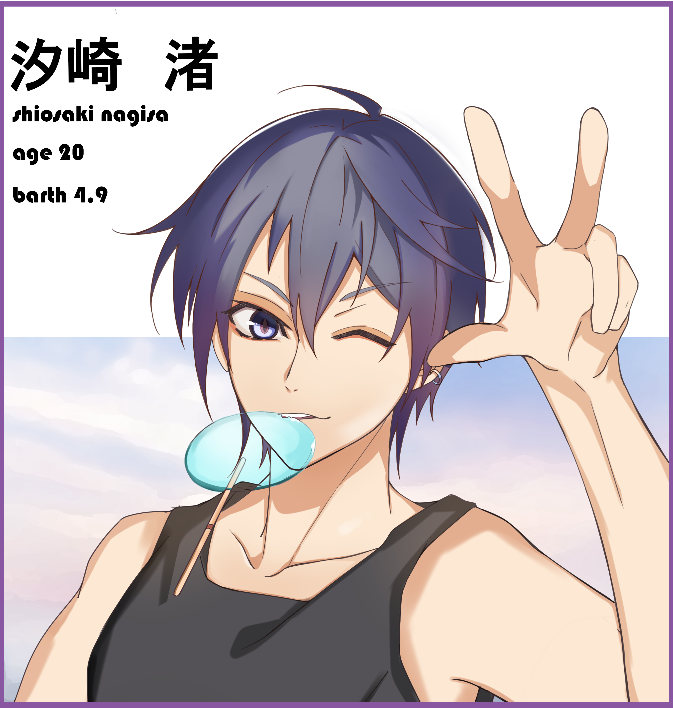
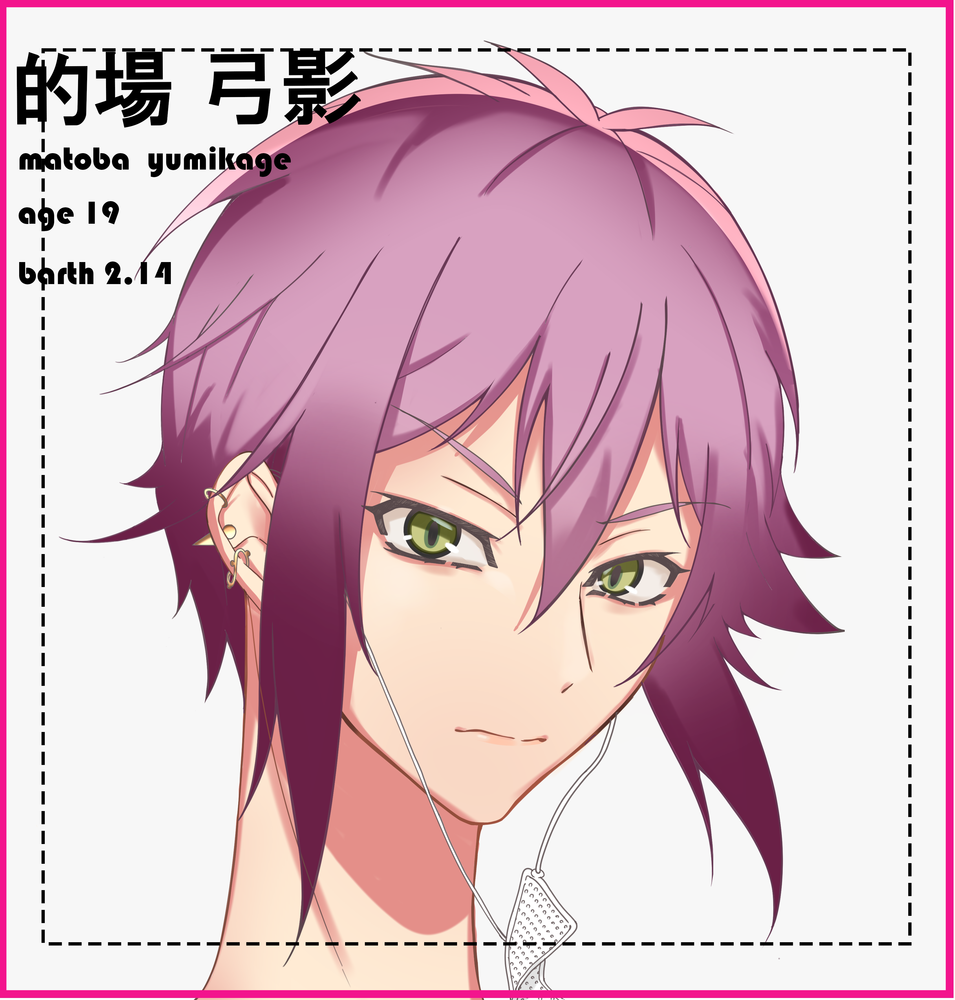
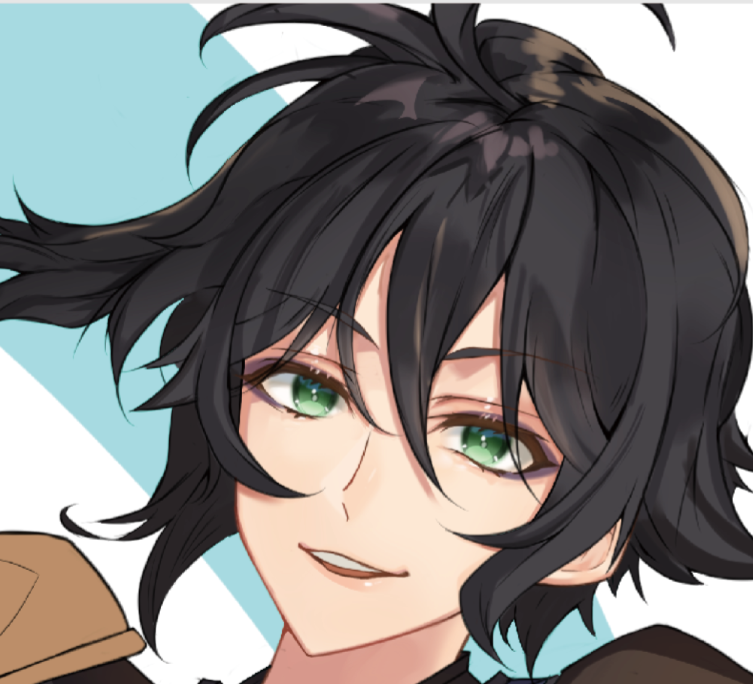

illust 私はイラストを描くことが好きで、暇さえあれば描いています。 特に線の細い長身イケメンが好みです。黒髪青目は好みドストライク。 日々理想のイラストに近づけるため研究しています。  「pool」 汐崎 渚 誕生日：4/9 年齢：20歳 身長：171cm 明るい性格の大学生。 イベント事が大好きで人の誕生日などは一度も欠かした事は無い。苦手なものは虫。視界に入れることすらできないほど。 「時雨」 浪川 時雨 誕生日：6/21 年齢：25歳 身長：182cm 古着屋に勤務している少し変わり者な人物。 情報通で、誰も知らないような秘密を持っている。彼に情報を聞きたいときは情報量（甘いもの）が必要。  「アルバイト」 坂埼 茜 誕生日：12/24 年齢：18歳 身長：175cm 秋葉原のコンセプトカフェでアルバイトをしている高校生。。 ツンデレな性格で人見知り。人見知りを直す為にアルバイトを始めた。好きなものは辛いもの。  「コスプレ男子」 夏目 宗次郎 誕生日：8/6 年齢：16歳 身長：169cm コスプレが趣味の高校生。。 自分の名前がコンプレックスで、普段は「棗」と名乗っている。本名で呼ばれると怒る。